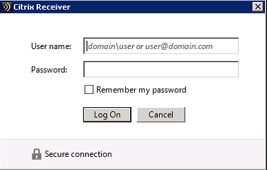
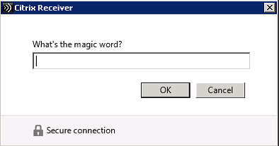
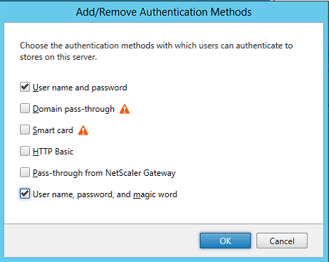
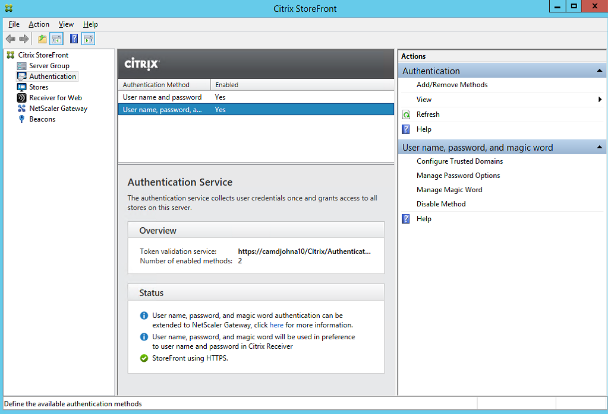
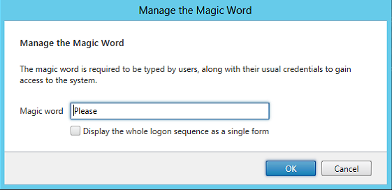

Overview¶
Introduction¶
This sample for the StoreFront Authentication SDK demonstrates how to create and add a custom form implementation to StoreFront. As described in the StoreFront Services Authentication SDK document, this protocol will be advertised to the clients as: CustomForms. The clients are required to recognize this protocol identifier and map it to their existing Common Forms rendering. Clients will give preference to this new protocol over the existing ExplicitForms protocol, should both be available.
Note
Only one authentication method can be deployed that advertises itself with a specific protocol choice name. Because Forms customizations rely on being advertised as CustomForms, this means that only one Forms customization can be installed on a StoreFront server.
This sample is a simple two-factor authentication protocol where the user has to supply both their password and a fixed “magic word”, as illustrated below in Receiver for Windows:


The sample also demonstrates:
- How to extend the StoreFront Administration Console to add an action item that displays User Interface elements for configuring the protocol properties
- How to configure the “Magic Word” that users must supply, and whether or not the protocol is split over two forms or displayed as a single form.
If the StoreFront Administration Console is opened after deploying this sample, selecting the “Add/Remove Methods” action for the Authentication node, the following is displayed, including the “Magic Word” authentication method:

Selecting the “User name, password, and magic word” method will deploy and enable the method. Selecting the method in the console displays the actions associated with the method.

The required “magic word” settings can be configured by selecting the Manage Magic Word action item in the context area for this authentication method, which brings up the following dialog:

Installer¶
In common with the other samples, a pre-built installer is provided in addition to the source code.
Before attempting to deploy the pre-built sample installers, it is required to add the certificate at AuthSDK.zip/Certificates/YourCompany.cer to the Third-Party Root Certification Authorities store of the Local Computer account where StoreFront is installed. This is not required for the development machine. If this step is not completed, then the StoreFront Administration Console will display an error because the digital signature of the PowerShell modules associated with this customization will fail to verify.
The installer verifies that there is not an existing customization that implements CustomForms before deploying the StoreFront Feature package and the add-ins to the administration console. To actually deploy and enable a sample the “Add/Remove Methods” action from the “Authentication” node of the StoreFront Administration Console should be used.
Note
If the installer is being deployed to a StoreFront Server Group, it must be run on all servers in the group.
Before attempting to uninstall a sample, the associated authentication method must first be removed using the “Add/Remove Methods” action. If this is not done, attempting to uninstall will result in a dialog informing the administratorthat the feature should be removed using the StoreFront Administration Console first. The sample can then be removed by using the standard “Add/Remove Programs” control panel applet.
Code Sample¶
Visual Studio Solution Layout¶
This sample demonstrates as many aspects of the SDK as possible, and is composed of seven projects:
- Configuration contains the configuration section, the parser for the settings, and the object to hold the settings
- Feature contains the code that will be added to the Authentication Service to control the authentication process, including:
- A custom conversation object and its associated factory
- Custom forms and templates for both the single and multi-page variants
- The start-up module used to populate the IoC container
- A helper for event log messages
- FeatureInstaller contains the following:
- A custom feature instance to demonstrate how to add custom steps during deployment
- A demonstration of how to create a PowerShell command, and how to register the PowerShell snap-in
- Console.Extension contains the code for the administration console, including the data models, action handlers, business logic, and user interface elements.
- Installer is a WiX project to create an msi installer to deploy and remove the Magic Word Feature. It also contains the StoreFront Feature Package definition and builds the Feature Package.
- Installer.CustomActions contains the msi custom actions required to deploy and remove the Magic Word Feature.
- UnitTests contains some unit tests to verify the merging of the code and configuration into the authentication service, verify the behavior of the Service Locator, and verify the behavior of the authentication conversation.
All the projects target the .NET Framework 4.5 and the MSIL platform, unless specifically stated. Projects that target .NET Framework 3.5 are either part of the StoreFront Administration Console, or loaded by the Console. The rationale behind this is discussed in the StoreFront Services Authentication SDK document.
Configuration Project¶
This C# class library project follows the standard pattern for a StoreFront configuration project and contains:
- A configuration section that controls how the settings are read from the Authentication Service web.config file
- A parser object that parses the configuration section and generates a settings object
- The settings object
Note
- This project is targeted at .NET Framework 3.5, because it will be used by the StoreFront PowerShell Configuration Provider, which is used by the StoreFront Administration Console. See the StoreFront Services Authentication SDK document for more information.
- In order for the StoreFront PowerShell Configuration Provider to be able to load the configuration section, this assembly must be placed in the .NET Global Assembly Cache, and so must be strongly named.
Feature Project¶
This C# class library project contains the custom classes for controlling the forms conversation; see the StoreFront Authentication Form Generation document for more details. These classes include:
- The custom conversation and its associated factory
- Custom forms and templates for both the single and multi-page variants required by this conversation
The project also contains the start-up module that is responsible for populating the IoC container with the objects required for this custom conversation. See the StoreFront Services Authentication SDK document for more details regarding start-up modules. This start-up module adds the following:
- The parsed settings object
- The conversation factory
In addition, there is a class following the standard pattern for logging to aid with diagnostics.
Console.Extension Project¶
This C# class library project contains: - The authentication extension class to provide status messages including: - Stating that this customization will take precedence over user name and password - Optionally a message stating that Delegated Forms Authentication is available, and demonstrating how to have a link in a status message, in this case to the Delegated Forms Authentication read-me document. - Optionally a message stating that the Delegated Forms Authentication is not using this custom conversation, and providing a link to set Delegated Forms to use this conversation - The view extension class to add the following Actions: - The built-in action to manage change password options - The built-in action to manage trusted domains - The custom action to manage the settings for this customization - The User Interface elements required for managing the settings, including the xaml and view model - The PowerShell commands in a module for managing the settings - The business logic object and the associated data model that utilizes the PowerShell - The localizer class to provide the localized authentication method name in the StoreFront Administration Console
Note
This project is targeted at .NET Framework 3.5, because it will be loaded by the StoreFront Administration Console.
Installer Project¶
This WiX project is responsible for the following:
- Creating the Magic Word StoreFront Feature Package
- Creating an installer to:
- Deploy the Feature Package
- Deploy the StoreFront Administration Console extension
- Update the registry so that the StoreFront Administration Console will load the extension
Note: This project is targeted at the x64 platform
Installer.CustomActions Project¶
This C# class library project uses the standard pattern, as described in the StoreFront Authentication SDK document, with the Feature identifier and Authentication Protocol Name set to appropriate values for this customization.
Note
- This project is targeted at .NET Framework 3.5.
- This project is targeted at the x64 platform to ensure that it has access to the correct registry locations.
Unit Tests Project¶
This project contains standard web.config merge and unmerge, route, and protocol choice tests, in addition to tests of the entire conversation including changing expired password and error cases.